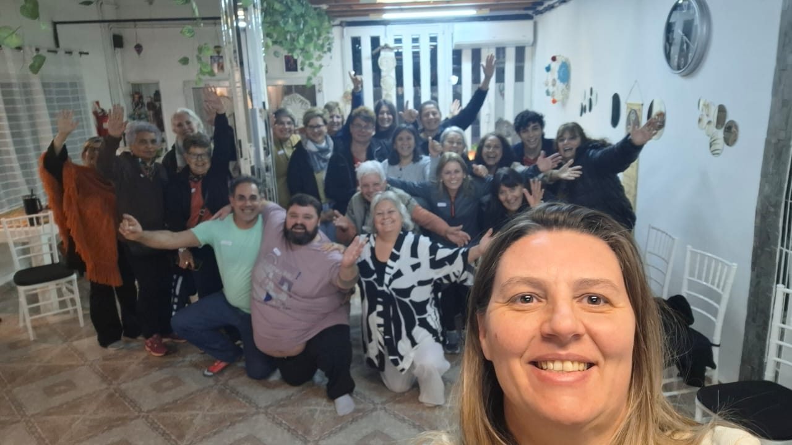
NEWEN
Constelaciones y encuentros
Grupos reunidos para compartir, escuchar y explorar experiencias.
Compartir mi experiencia ↗Un camino de transformación y expansión. Saberes ancestrales, encuentros, escritura y experiencias que nos invitan a mirar hacia adentro y compartir con otros.
Conocé este espacio ↗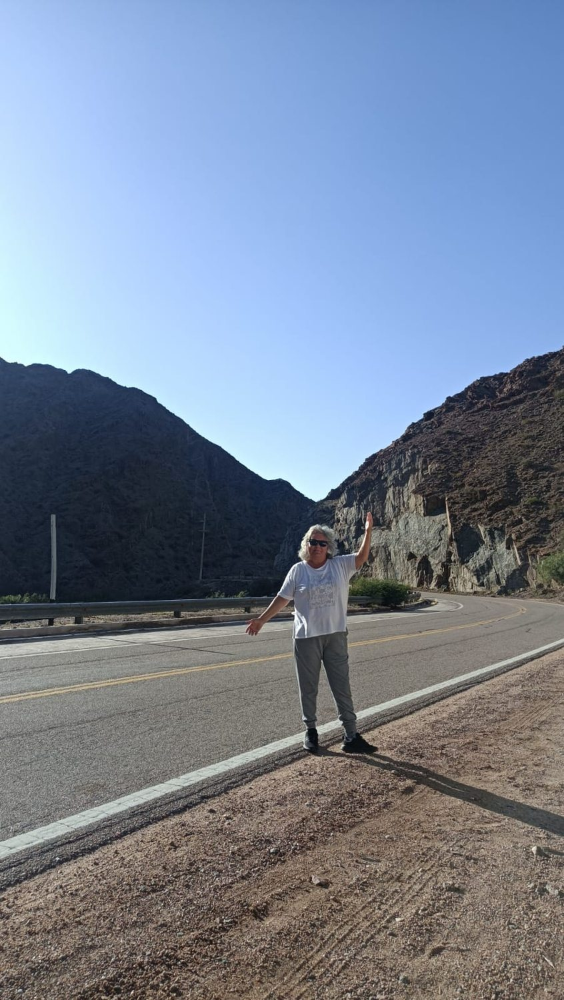
Este es un espacio para compartir parte de mi recorrido: los saberes que me acompañan, las preguntas, los encuentros, las experiencias vividas y las historias que merecen ser contadas.
Integro distintas herramientas de autoconocimiento, escucha corporal, constelaciones familiares, Reiki y saberes ancestrales. Acompaño procesos individuales y grupales y sigo aprendiendo en cada encuentro.
«No se trata solamente de lo que tengo para decir. También de las voces que vamos encontrando en el camino».
NEWEN ya llevaba ese nombre cuando llegué al salón. Allí comenzaron a suceder sesiones, clases, meditaciones, rituales, sahumos, constelaciones y encuentros.
Con el tiempo, fueron las mismas personas quienes empezaron a llamarlo un espacio sagrado. Yo también comencé a sentirlo así. Hoy es una escuelita de autoconocimiento, de aprendizaje y de experiencias compartidas.


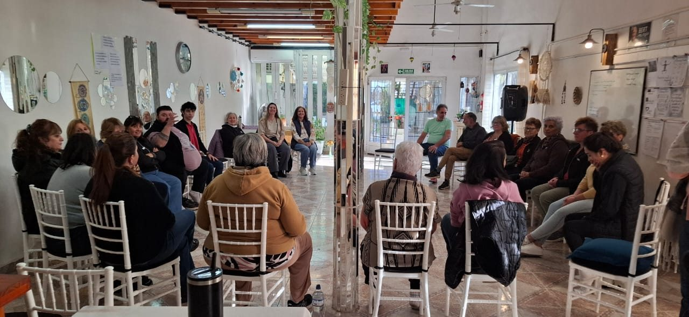
Momentos reales de talleres, clases y actividades. Cada fotografía es una invitación a recordar, compartir y seguir conversando.

Grupos reunidos para compartir, escuchar y explorar experiencias.
Compartir mi experiencia ↗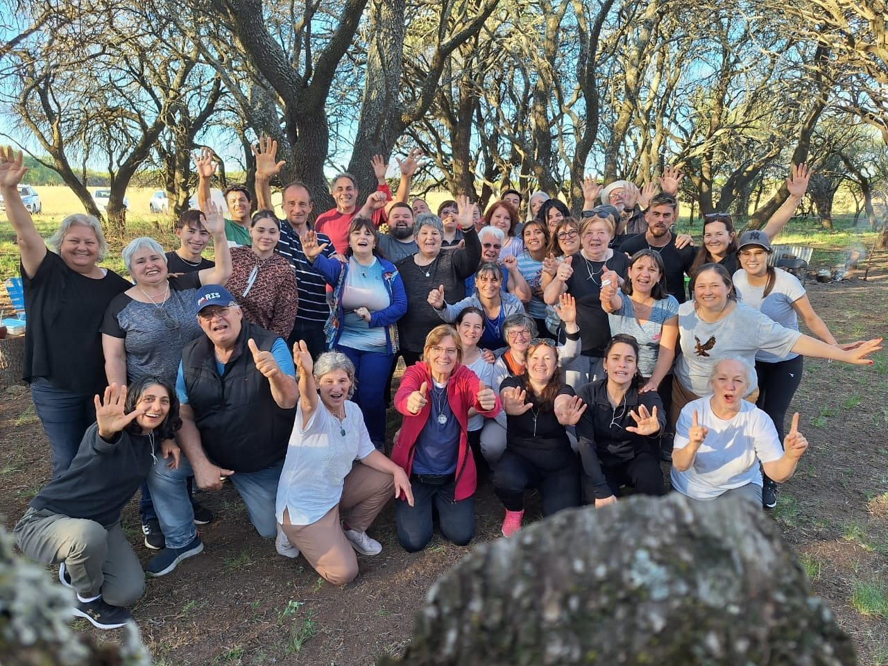
Encuentros que llevan las conversaciones y los aprendizajes a la naturaleza.
Contar mi historia ↗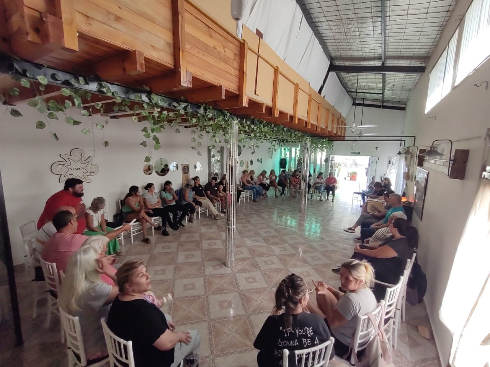
Momentos que nos recuerdan el valor de estar, escuchar y encontrarnos.
Dejar mi voz ↗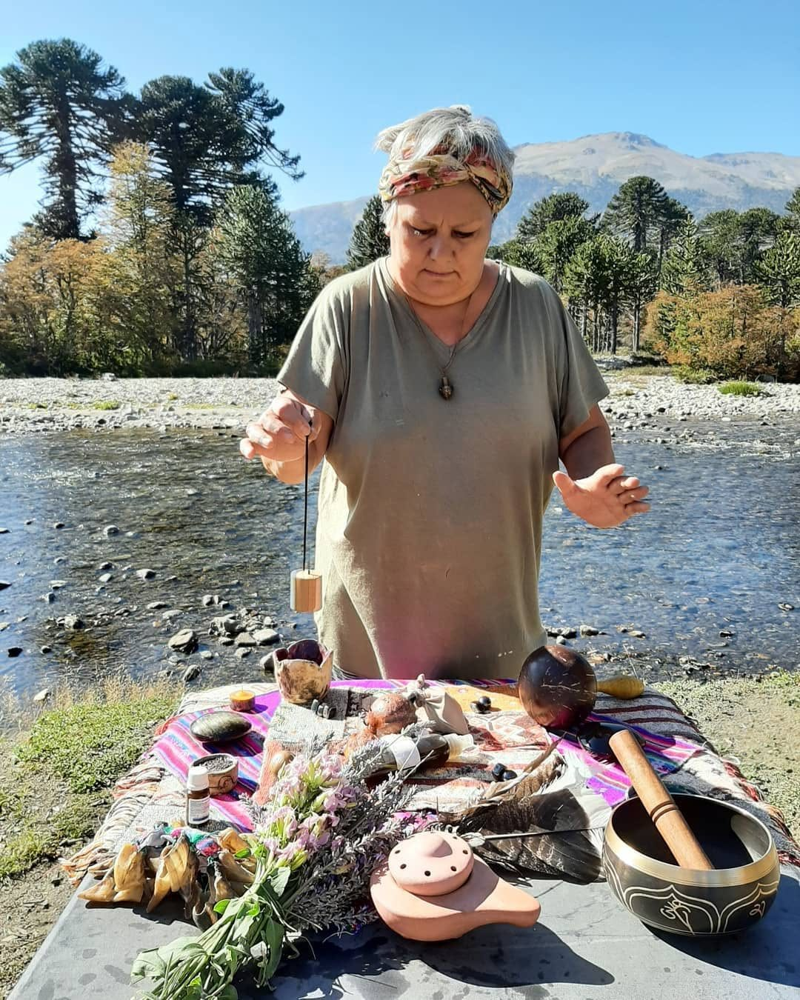
En Villa Pehuenia y en otros paisajes, los retiros nos invitan a salir de la rutina para encontrarnos con la naturaleza, con el silencio, con las preguntas y con las personas que nos acompañan.
Acá no solo habrá fotografías de los retiros: quienes hayan participado también tendrán un espacio para escribir qué vivieron y qué historias quieren compartir.
Quiero compartir mi experiencia ↗Próximamente llegará mi libro. Este rincón reunirá su título, portada, historia, novedades del lanzamiento y la información para conseguirlo.
Por ahora lo dejamos como una invitación a lo que está por venir. La portada que ves es solamente ilustrativa; la reemplazaremos por la verdadera.
PróximamenteUn espacio de atención plena, ejercicios sistémicos y reflexiones de biodescodificación para acompañar el autoconocimiento.
Cargando meditaciones…
Estas propuestas son herramientas complementarias de reflexión y bienestar; no sustituyen la atención médica ni psicológica.
Cargando artículos…
Reflexiones, saberes, historias y preguntas. Un lugar para escribir sin apuro. Los títulos de abajo son ideas para futuras publicaciones.
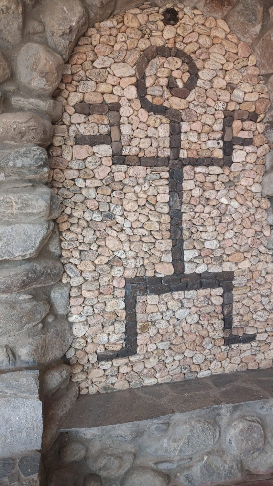
Una invitación a escuchar nuestro propio ritmo.
Artículo por escribir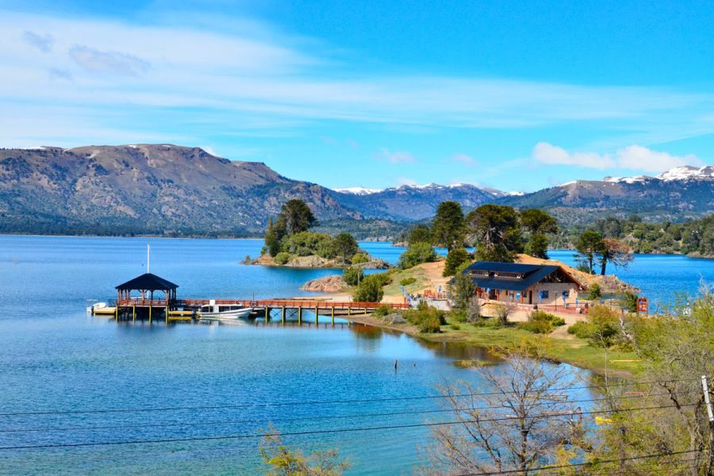
Sobre los vínculos entre experiencia, paisaje y aprendizaje.
Artículo por escribir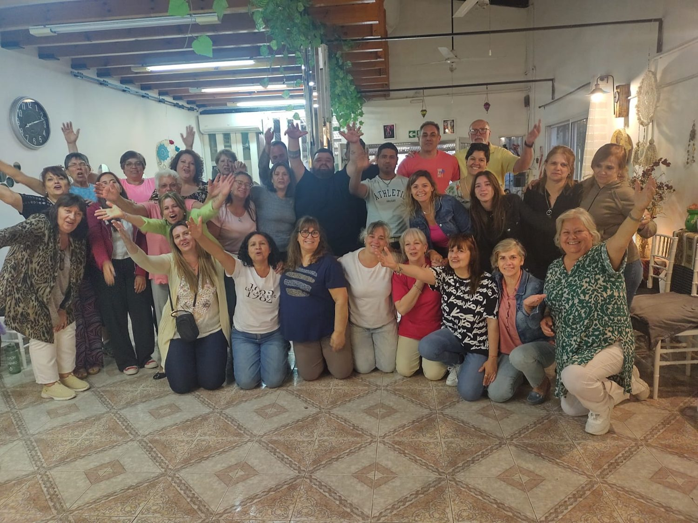
Sobre los encuentros y las voces que dejan huella.
Artículo por escribir«Este espacio no nace para que una sola persona tenga todas las respuestas. Nace para que podamos compartir preguntas, experiencias y miradas diferentes».
Un espacio independiente de mis artículos. Acá podrás iniciar una conversación, contar lo que viviste en un retiro o taller, hacer preguntas, reflexionar o simplemente compartir lo que tengas ganas de decir.
La idea es que la comunidad converse entre sí, sin que todo dependa de mí. Para publicar habrá que registrarse con una cuenta identificada, y los mensajes podrán moderarse para cuidar el espacio.
Esta primera versión es una muestra visual. El registro, la publicación pública, las respuestas y la moderación se habilitarán al elegir la plataforma definitiva.
No envía ni guarda datos en línea. El correo electrónico, cuando se habilite, será privado y no aparecerá en las publicaciones.
Viajes, naturaleza, lugares, preguntas y experiencias. Porque también nos vamos encontrando en los caminos que recorremos.
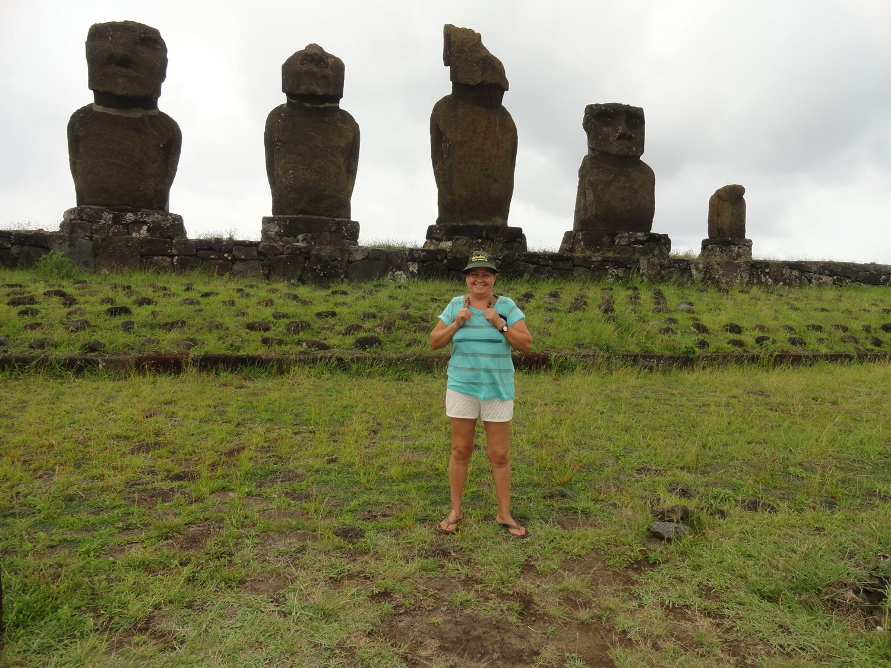
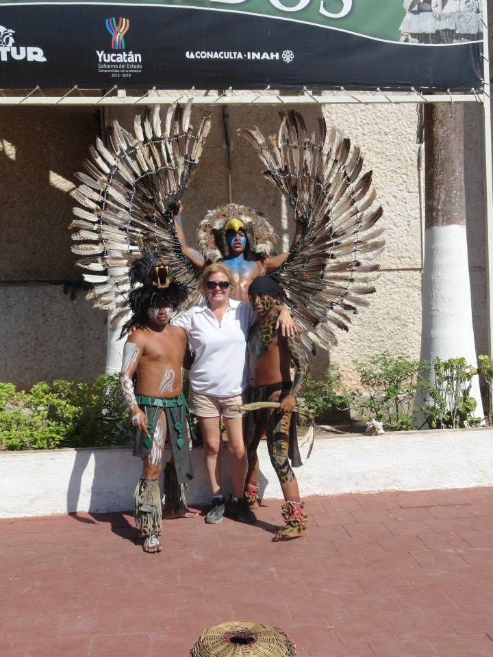
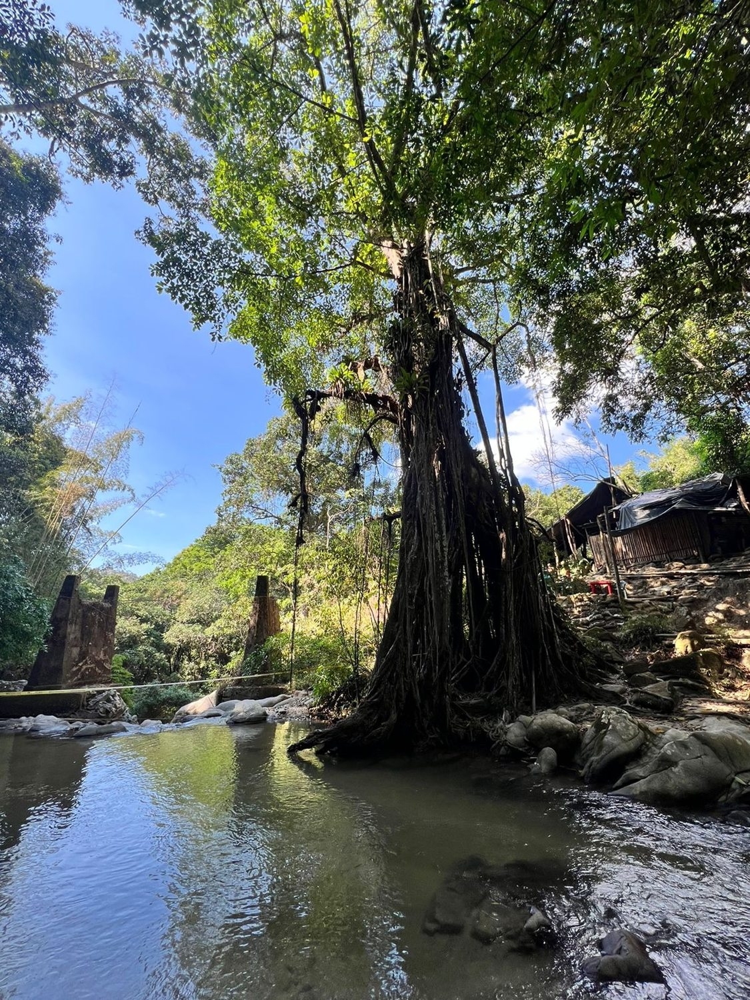
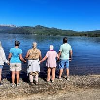
Esta galería irá creciendo con tus relatos y fotografías, sin confundir los viajes personales con los retiros que organizás.
Sesiones individuales, encuentros grupales y diferentes propuestas de autoconocimiento desde una mirada integrativa que reúne cuerpo, emociones, vínculos y saberes ancestrales.
Estas prácticas se presentan como propuestas complementarias de bienestar y autoconocimiento, no como sustitutos de tratamientos médicos o psicológicos.
Consultar por Instagram ↗